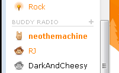
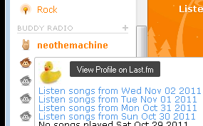

|  |  |
BuddyRadio is an extension to Grooveshark and adds a new sidebar section on the left side of it. There you can add your friends (or other users) from Last.fm and see when they are listening to music. If they are, you can tune into their live listening stream by clicking their user name. You can also tune into the past, that is choose some day of last week and play the music your friends listened to at that day.
If you are using the new preview of Grooveshark then BuddyRadio is under "My Music" on the bottom left of the pinboard. There you just click "Add...".

If you use the normal / current version of Grooveshark then just click the "+" icon on the right side of the BuddyRadio header.
Advice: Use the "Import my Last.fm Buddies" option to import all your Last.fm friends at once! Just enter your Last.fm name and click the button to start loading them.
This is the easiest one. Just click on the name of the user!
If your friend stops listening to music then your music will stop as well after all queued songs finished playing. It will restart again when your friend starts playing some music again.
Advice: If your friend isn't online, you can also listen to some of his songs of last week! (see below)
Click on the icon left to the user name. From there you can choose which day to listen to. You can close the menu by clicking on the icon again.
At the moment you can only hear music of the last 7 days.
Advice: In the settings menu (see below) you can change how many songs are preloaded. This makes it easier to skip songs you don't like. This setting is only effective when listening to songs of past days.
Just tune into as many friends as you like by clicking on them or using the user menu for songs from last week! The songs will then be mixed.
Advice: In the settings menu (see below) you can change how many songs of each user should be played in a row before songs of the next user are played.
When you hover over the BuddyRadio heading a settings link will appear which you have to click to open the settings menu. In the new version of Grooveshark you just click the "Settings" link as shown in the screenshot.
Info: All your settings and imported friends are saved locally in your web browser. You don't have to redo all steps next time.
| Mozilla Firefox | Google Chrome | Opera | Internet Explorer | |
|---|---|---|---|---|
| Greasemonkey | X | X | (soon) | - |
| Bookmarklet | X | X | (soon) | X* |
* IE9 and newer only. You also have to switch document mode to IE9 (Grooveshark has IE8 as default)
If you want to use BuddyRadio each time you visit Grooveshark then you should install it as a Greasemonkey Script.
If you want to test BuddyRadio first or just use it occassionally, it might be better to use the Bookmarklet version which also runs in every browser. (well.. soon will)
Drag me to your bookmarks and click once while on Grooveshark.com. That's all!
Please jump over to the BuddyRadio userscripts.org site. There you can discuss, submit issues, write reviews and even become a fan ;-)
No! The script you download is just a very small one (like a boot loader) which loads its main application from a dedicated server each time you run BuddyRadio. Therefore you automatically always use the latest available version and don't have to worry about it.
BuddyRadio uses the local storage of your web browser and doesn't save anything on remote servers. Therefore, if you use another device or reinstall your browser, that data will be lost. To make a fresh start easier, BuddyRadio has a built-in function to load all your Last.fm friends at once. (click "+")
Sometimes when BuddyRadio tries to add a new song to Grooveshark's playlist, it doesn't work. With the limited Javascript API (see question below) there is no way to detect whether this has happened (before the song ends). If it could be detected (by having access to the whole playlist queue) BuddyRadio could immediately try again to add the new song to the playlist. So instead, what happens is, the current song ends and BuddyRadio can now detect that there should be something new playing now, but in fact there isn't. Then, it can try to add the song again one more time. That's why there is a slight delay in some cases.
If you look at the source code or observe your web traffic you will see requests to http://buddyradioproxy.appspot.com/tinysong. This is a simple wrapper to the Tinysong API I had to create as it's not allowed to publish your personal Tinysong API key (e.g. as part of the source code of BuddyRadio). Tinysong is owned by Grooveshark and is used in BuddyRadio to find songs in Grooveshark. This is needed because Grooveshark's Javascript API doesn't support any searching.
First, Last.fm doesn't allow to stream music using their public API. Second, many songs on Last.fm are only available as a 30 sec version or not at all, particularly newer releases. Grooveshark on the other hand lets users upload any of their music and operates under the DMCA like YouTube. So, you might ask, why not fetch songs from Grooveshark and somehow play them inside Last.fm? That's not possible either as Grooveshark isn't granting streaming API access to some small developer. What they do is provide Javascript API access while you're on their website. The BuddyRadio code base has been kept quite modular so that if any of the APIs change or even a different streaming site should be used, the effort should be quite low.